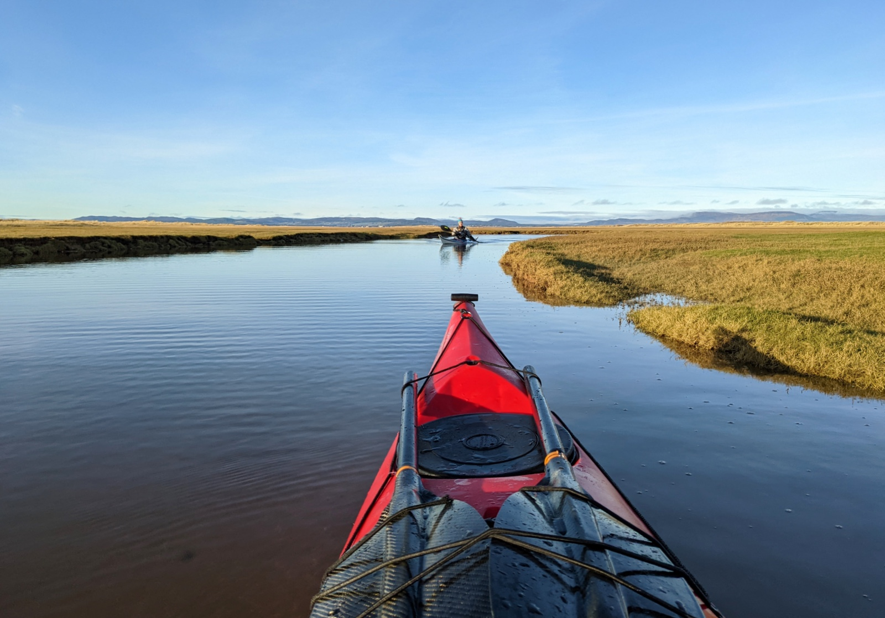
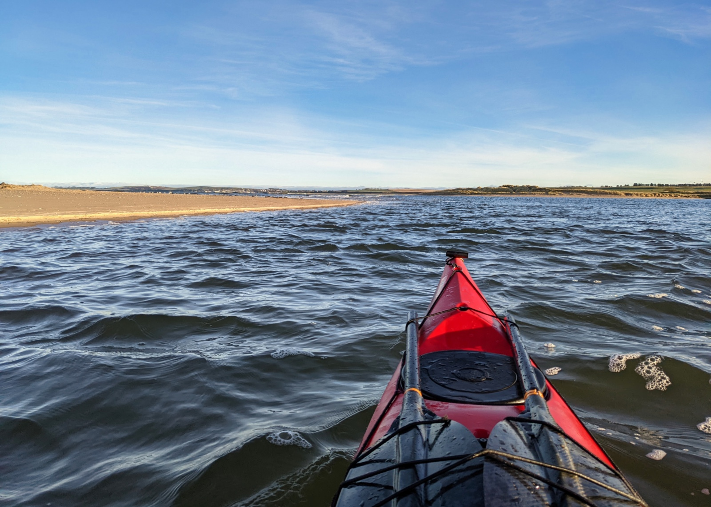
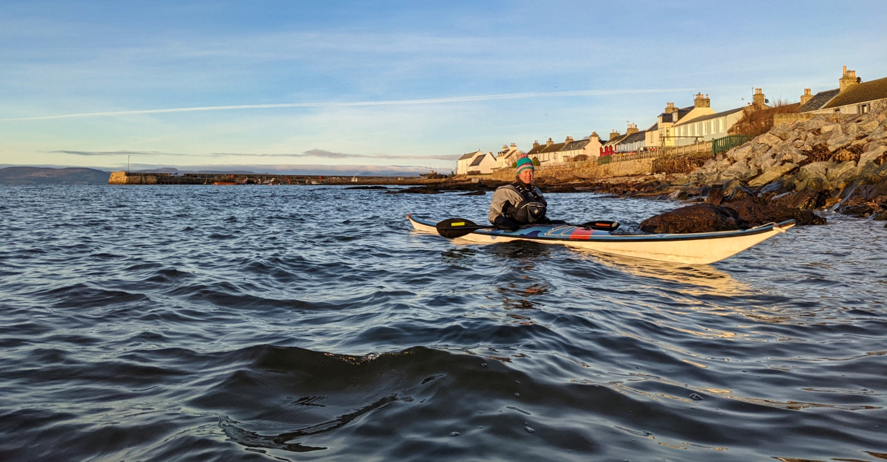
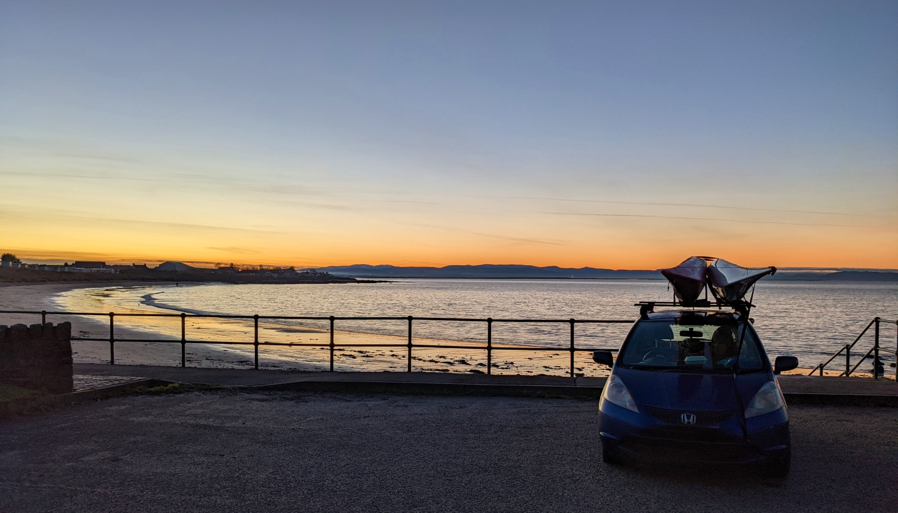

The word “inver” means “mouth of a river or estuary” in Celtic languages such as Gaelic, a language still very much alive in Scotland. We live in Inverness, which is where you’ll find the mouth of the river Ness, which runs between loch (loch=lake) Ness (yes, that place where you find monsters) and the ocean.
With that little piece of background information, you may have guessed where the village at the start of our paddle, named Inver, was situated. You guessed correctly, at the mouth of a river.
We had not been in the area yet, and we managed to be there at high tide. This way, we could explore the sea channels in the estuary that were now filled with water, and would otherwise be dry and muddy. They were long, and made us wiggle through the land. The land around was only perhaps 5 cm above the high tide water level, and so even though I would be a few bends ahead of Leigh, if I looked back I could see his upper body sticking out above the land.

This area is used as motor cross terrain, and also as a military practice area. The flags were down, but the motor cross was very much on, providing a background noise of an angry wasp. We tried to ignore it, because the surroundings themselves were beautiful, and very sandy. Actually, it reminded me a lot of Prince Edward Island. So when I miss the place, I now have a place in Scotland to go to.

Our final destination was Portmahomack. This is quite an amazing little settlement. Very cute, and according to its website it’s the only village on the East coast that faces due West.. The East coast does not have midges, they are only in the West, so if you want to watch a sunset over water on a calm day, I think Portmahomack is the place to be. There is also lots of culture to be seen (not out of tourist season while experiencing a blooming Covid situation) but there was a crypt found from the 8th century, and other artefacts from Pictish and Viking times that definitely warrant a return on another day.

We were also partly here because it was the last day of the season for a local cafe that looked so cute on photo’s and was even better in reality.
Leigh settled himself around the boats while Annette had heard from the lady in the cafe that you can run back to Inver right on the beach if it’s not high tide (which by now it wasn’t anymore). So with a beautiful run back in the sunset (which unfortunately seems to be more South than West at this time of the year, but was still beautiful) it was a quick and very pleasant run back on a frozen beach to get the car. Meanwhile, Leigh had gotten company from a fishmonger who goes around in a van and parks in little villages, and so half the village came by to get their supper. Such a cute place.
